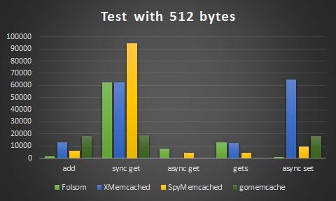
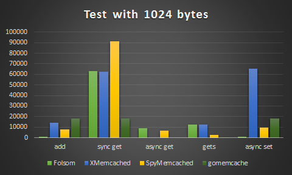

我创建了一个项目，用来比较Java memcached client的性能：Java-Memcached-Clients-Benchmark
spymemcached 和 xmemcached是Java中常用的Memcached的客户端。
spymemcached最早是由Dustin Sallings创建，至少从2006年就开始开发spymemcached，作为共同创建者加入到Couchbase以后到现在spymemcached由Couchbase来维护，2014年2月他加入了Google，兴趣也似乎转为了Golang。
xmemcached是原淘宝员工killme2008(庄晓丹, 花名“伯岩”)，现在在LeanCloud工作， killme2008的兴趣在于clojure。xmemcached也是一个历史悠久的项目了，1.2.5版发布于2010年。
Folsom是一个比较新的Java Memcached client,它是现在如日中天的正版流媒体音乐服务平台Spotify的工程师们创建的，并且应用于公司的平台中。因为新(2015年初才第一次提交)，所以多扯几句。Folsom基于Netty实现，并在编程风格也更现代，异步，链式调用，metrics，代码简洁而有效。由有丰富经验的工程师维护，并且深度应用于他们公司高并发的产品应用中，没有遇到什么问题，值得信赖。
spymemcached和xmemcached开发比较早，代码容易带有历史的包袱，但是因为它们已经广泛地应用于许多实际的项目中，开发人员比较熟悉。
spymemcached的项目描述是这样的:"A simple, asynchronous, single-threaded memcached client written in java. "， 异步和单线程是它的特点，单个的client只使用单个的IO线程，这有一个陷阱，如果你的应用中有很多线程，那么分配给spymemcached client的线程的CPU时间片可能很少，这会降低spymemcached性能。这一点xmemcached也好很多。
我还遇到过spymemcached的一个坑。
xmemcached我觉得有问题的是没有提供异步接口，尽管它有一些方法提供了xxxWithNoRely,但是实际并不是异步的编程方式，只是忽略了memcached的返回,因为你想想异步地处理get方法，没办法，只能自己再包装。而且我测试的时候发现setWithNoReply还不稳定，抛出异常。
Folsom API非常的现代，但是了解它的人不多，所以没有经过广大的人民群众的检验，或许还没有暴露问题，另外文档也缺乏，只能看它的API和单元测试了解它的使用。
我还增加了一个Go memcached客户端的测试 gomemcache， 它是目前最常用的Go的客户端库。因为Go语言编程风格的原因，它所有的操作都是同步的，业务访问可以通过goroutine的方式实现异步访问。
我的测试很简单，用100个线程进行测试，每个线程会执行10000次的操作(批量查询gets执行100次的操作，每个操作查询100个key), 单个记录的数据分别是32 bytes、512 bytes 和 1024 bytes。

纵坐标是执行测试所需的时间，数值越小性能越好。
有几点需要说明
get方法是 spymemcached/Folsom 异步执行的，xmemcached执行的是addWithNoReply， gomemcache是同步执行的，所花时间较高- xmemcached和gomemcache 没有
异步get的方法，测试空缺。 gets批量查询的方法 gomemcache 所需时间很短，在图上没有显示出来。- xmemcached和gomemcache 没有
异步set的方法,所以用同步set的数据来显示，所花时间较高。虽然xmemcached有setWithNoReply方法，但是会抛出异常。


测试没有记录所需的内存和CPU占用。